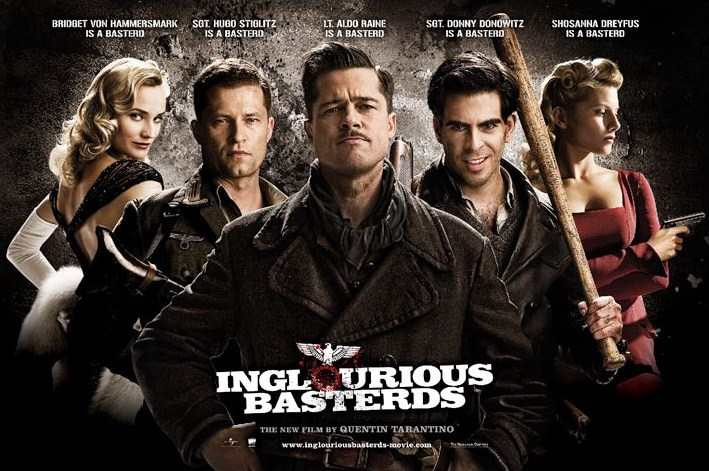

Pulp Fiction, conocida en Latinoamérica como Tiempos violentos, es una película dirigida por Quentin Tarantino, estrenada en el año 1994. El guion está basado en historias que el mismo Tarantino desarrolló en colaboración con Roger Avary durante los años 1992 y 1993, incluyendo escenas que originalmente habían sido escritas para True Romance. A partir de una narrativa no lineal, la película entrelaza varias historias cuyos protagonistas son miembros del crimen organizado de Los Ángeles.
Pulp Fiction se sitúa en Los Ángeles. Una pareja discute en una cafetería sobre sus planes para el futuro. Poco a poco el diálogo revela que son dos delincuentes planeando su próximo movimiento. Bajo una persuasiva argumentación, el hombre convence a la mujer de iniciar de inmediato un asalto a la cafetería. Paralelamente, Vincent y Jules, elegantemente vestidos, conversan en su carro sobre los más banales temas y sobre la nueva misión de Vincent: entretener a la esposa del gánster Marsellus Wallace durante su ausencia. Los dos hombres se dirigen a recuperar un maletín que pertenece a Wallace, y que está en poder de los jóvenes Brett, Roger y Marvin. Al llegarr al apartamento, Jules invoca un pasaje bíblico (Ezequiel 25, 17), y acto seguido, asesinan a Brett y a Roger. La película Pulp Fiction de Tarantino se construye como un relato interreferencial, es decir, que alude constantemente a la historia del cine, una de las razones que la convierten en película de culto para los cinéfilos. Asimismo, reflexiona sobre los recursos narrativos de diferentes géneros literarios y cinematográficos.

Una película de 2009 escrita y dirigida por Quentin Tarantino y protagonizada por Brad Pitt, Christoph Waltz y Mélanie Laurent. Titulada Malditos bastardos en España y Bastardos sin gloria en Hispanoamérica, la película es una ficción ucrónica sobre la Alemania nazi. El estilo recuerda al spaghetti western y al cine bélico italiano de los años 1960. Christoph Waltz, que interpretó al Standartenführer Hans Landa, recibió el premio al mejor actor en el Festival de Cannes, el premio al mejor actor de reparto del Sindicato de Actores, el Globo de Oro y Óscar en la misma categoría. El propio Tarantino declara desde la primera imagen la pretensión de parodiar el género de las revistas de bolsillo o folletines periódicos que contienen historias criminalísticas imitando, incluso, la estructura narrativa y la estética.
Durante la ocupación alemana en la Francia de la Segunda Guerra Mundial, Shosanna huye de los nazis hacia París. En otro lugar de Europa, el teniente Aldo Raine organiza a un grupo de soldados para tomar represalias. "Malditos bastardos" es una de las propuestas más exitosas de Quentin Tarantino. Engendrado antes de "Kill Bill", el guion tardó casi diez años en cristalizar, puesto que el cineasta no encontraba un final que realmente le gustase. El título hace referencia a una cinta de Enzo G. Castellari conocida en inglés como "Inglourious Bastards", puesto que el proyecto se inspira en el concepto de dicho filme. Planteada originalmente como un espagueti wéstern, la cinta acabó convirtiéndose en una mezcla de géneros algo delirante que propone una reinvención de la historia.